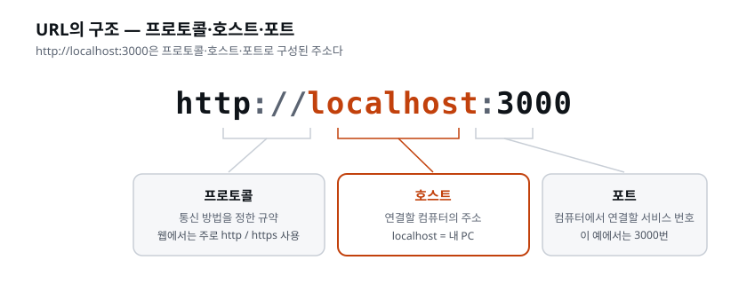

이 장을 마치면 이벤트 목록·상세·예매·결제 화면, 마이티켓과 운영 화면을 web/ 안에 구현하고 API 서버에 연결할 수 있다. CORS 오류의 원인을 이해하고 허용 출처를 설정하는 방법도 익힌다. 또한 화면이 맡을 일과 서버가 맡을 일을 구분할 수 있다.
프론트엔드는 API 명세서와 돌아가는 백엔드만 있으면 무엇으로든 만들 수 있다. 웹이든
휴대폰 앱이든 키오스크든, 명세대로 요청을 보내고 응답을 받아 그리면 된다. 그리고 지금
그 둘이 다 있다 — docs/API-Spec.md, 그리고 Supabase DB에 연결되어 명세대로 답하는 api
서버.
순서를 뒤집어 백엔드 없이 화면부터 만들면 어떻게 되나. 화면은 보여줄 데이터가 필요하니 가짜 데이터를 지어내 그리게 된다. 그러다 진짜 API가 붙는 날, 필드 이름이 다르고 없는 값이 있고 실패 응답은 생각도 안 해 둔 것이 드러나, 가짜로 그린 화면을 다시 맞춰야 한다. 진짜 응답이 있는 상태에서 시작하면 그 재작업이 없다.
프론트엔드도 백엔드와 똑같은 명세를 기준 자료로 삼는다. 둘이 같은 API 명세서를 보기 때문에,
따로 만들어도 서로 어긋나지 않는다. 데이터의 기준 자료가 명세라면, 모양의 기준 자료는
디자인팀이 남긴 넷이다 — design/tokens.css(색·크기), design/금지목록.md(하지 말 것),
docs/화면기획서.md(화면별 요소와 상태), 그리고 design/의 전 화면 시안·프로토타입(눌러 보며
확정한 모습과 동선). 프론트엔드는 이 다섯을 받아 동작하는 화면으로 옮긴다.
프론트엔드 코드에는 백엔드·DB와 결정적으로 다른 점이 하나 있다. 사용자의 컴퓨터에서 실행된다는 것이다. 우리가 배포한 화면 코드는 고객의 브라우저로 내려가서 돈다. 그리고 브라우저의 주인은 고객이다 — 개발자 도구를 열면 누구나 화면 코드를 읽고, 바꾸고, 요청을 조작할 수 있다.
이 말을 조금 더 구체적으로 그려 보자. 백엔드 코드는 우리 서버 안에서만 돈다. 고객은 그 코드를 볼 수도, 만질 수도 없다 — 우리 집 안방과 같다. 그런데 화면 코드는 다르다. 고객이 온티켓에 접속하는 순간, 우리가 만든 HTML·CSS·JavaScript가 통째로 고객의 브라우저로 복사되어 내려간다. 그 순간부터 그 코드는 고객의 컴퓨터에 있다. 고객은 F12(개발자 도구)를 눌러 우리 코드를 한 줄씩 읽을 수 있고, 값을 바꿔 볼 수 있고, "이 버튼을 누르면 어디로 요청이 가는지"까지 전부 들여다볼 수 있다. 심지어 우리 화면을 거치지 않고, 우리 API로 자기가 직접 요청을 쏴 볼 수도 있다. 이것은 우리가 허술해서가 아니라 웹이라는 기술의 본질이다. 브라우저에 내려간 코드는 더 이상 우리 것이 아니다.
그래서 프론트엔드에서는 이렇게 기억하면 좋다 — 화면 코드에 적힌 것은 전부 공개된 것이다. 비밀번호, 관리자 키, "이 값이면 통과" 같은 판정 기준을 화면 코드에 적어 두면, 그것은 고객에게 소리 내어 읽어 준 것과 같다.
이 사실에서 프론트엔드의 제1원칙이 나온다. 화면은 아무것도 판정하지 않는다. 잔여석이 있는지, 금액이 얼마인지를 화면 코드가 '결정'하게 만들면, 그 결정은 사용자 손안에 있는 셈이다. 우리는 이미 서버에서 이를 확인했다 — 금액 조작 요청을 서버가 무시하는 것을. 화면은 그 판정 결과를 보여줄 뿐이다.
한 문장으로 못 박아 두자. 화면은 물어보고, 서버가 판정한다. 화면은 "이 사람이 리버사이드 재즈 1일권 2장을 5만 원에 사려 합니다, 괜찮나요?"라고 서버에 물을 뿐이다. 잔여가 충분한지, 금액이 정말 5만 원이 맞는지는 서버가 자기 손안의 데이터로 다시 계산해 판정한다. 화면이 보낸 "5만 원"이라는 숫자는 서버 입장에서 참고조차 되지 않는다 — 고객이 조작했을 수 있는 값이기 때문이다. 이 원칙은 온티켓뿐 아니라 돈이 오가는 모든 서비스의 뼈대다.
[짚고 가기] '화면 코드는 사용자의 브라우저에서 실행된다'는 이 장 전체에서 가장 중요한 개념이다. 직접 해 보면 확실히 와닿는다. 아무 웹사이트나 열어 F12를 누르고, Elements(요소) 탭에서 글자 하나를 즉석에서 바꿔 보자. 방금 그 사이트의 제목을 바꿨지만, 이건 내 브라우저 안에서만 바뀐 것이고 서버는 아무것도 모른다. 이 한 번의 실험이 '브라우저는 사용자가 마음대로 바꿀 수 있다'를 몸으로 이해시킨다. 그렇다면 화면에 적힌 가격을 서버가 믿어 버리면 어떻게 될까 — 이 물음이 자연스럽게 다음으로 이어진다.
있다. 수량 입력칸에서 5를 못 고르게 막고, 이메일 형식이 틀리면 빨간 줄을 긋는다. 이것은 판정이 아니라 친절이다 — 고객이 서버까지 갔다가 퇴짜맞기 전에 미리 알려주는 것. 같은 검사가 두 곳에 있는 이유가 이제 분명해진다.
두 검사는 목적이 완전히 다르다. 화면의 검사는 고객을 돕기 위한 것이고, 서버의 검사는 회사를 지키기 위한 것이다. 예를 들어 이메일 형식 검사를 생각해 보자. 화면이 "@가 없네요"라고 즉시 빨간 줄을 그어 주면, 고객은 예매하기 버튼을 누르고 한참 기다렸다가 "잘못된 이메일입니다"를 받는 답답함을 겪지 않는다. 이것이 친절이다. 하지만 고객이 개발자 도구로 그 빨간 줄 검사를 무력화하고 엉터리 이메일을 그대로 보낼 수도 있으므로, 서버도 똑같이 이메일을 검사한다. 이것이 방어다. 친절은 건너뛰어도 고객만 불편하지만, 방어를 건너뛰면 회사가 다친다. 그래서 방어는 절대 생략하지 않는다.
| 화면의 검사 | 서버의 검사 | |
|---|---|---|
| 목적 | 사용자 편의 (빠른 피드백) | 방어 (최종 판정) |
| 우회 가능? | 가능 (사용자의 브라우저에서 도니까) | 불가능 |
| 없으면? | 불편해진다 | 사고가 난다 |
여기서 초심자가 자주 하는 오해 하나를 풀어 두자. "그럼 화면 검사는 어차피 우회되니까 안 만들어도 되는 것 아닌가?"라는 물음이다. 아니다. 화면 검사가 없으면 정직한 고객 대부분이 불편해진다. 초과 수량을 실수로 입력한 고객이, 버튼을 누르고 서버까지 다녀와서야 "안 됩니다"를 받으면 짜증이 난다. 화면 검사는 그 실수를 즉시 잡아 준다. 반대로 서버 검사가 없으면 악의를 가진 소수가 회사를 무너뜨린다. 둘 다 필요하되, 하나만 남긴다면 반드시 서버다. 화면 검사는 있으면 좋은 편의, 서버 검사는 없으면 안 되는 방어다.
그래서 프론트엔드 개발자의 일은 화면을 만드는 것 절반, 경계를 정하는 것 절반이다. 이 값은 누가 결정하는가? 온티켓으로 예를 들면:
| 결정 | 담당 | 이유 |
|---|---|---|
| 잔여석이 충분한가 | 서버 | 돈과 재고의 판정 |
| 최종 결제 금액 | 서버 | 조작되면 사고 |
| 매진 배지를 무슨 색으로 보여줄까 | 화면 | 표현의 문제 |
| 목록을 날짜순으로 보여줄까 | 화면(기본), 서버(정렬 옵션 제공) | 협의 지점 |
| 로딩 중에 무엇을 보여줄까 | 화면 | 전적으로 화면의 일 |
이 표를 읽는 법을 한 줄로 정리하면 이렇다. 값 자체를 정하는 일은 서버, 그 값을 어떻게 보여줄지 정하는 일은 화면. 잔여석 수(값)는 서버가 정하지만, 매진 상태를 어떤 색의 배지로 보여줄지는 화면에서 정한다. 금액(값)은 서버가 계산하지만, 그 금액을 세 자리마다 콤마를 찍어 "50,000원"으로 보여줄지(표현)는 화면이 정한다. 표현을 아무리 바꿔도 회사가 손해 볼 일은 없다 — 그래서 표현은 화면에 맡겨도 안전하다.
이 표를 채우는 감각은 실무 어디서나 쓰인다 — 쇼핑몰의 할인율 계산(서버), 할인 배지 애니메이션(화면), 게임의 점수 계산(서버), 점수 연출(화면). 헷갈리면 한 가지만 묻자. "사용자가 이 값을 조작하면 누가 손해 보나?" 회사가 손해 보면 서버의 일이다.
경계 감각이 실무에서 어떻게 쓰이는지, 도메인 몇 개로 더 넓혀 보자.
공통점이 보이는가. 돈·재고·권한처럼 조작되면 회사가 다치는 값은 예외 없이 서버, 색·배치·애니메이션처럼 조작돼도 고객 눈에만 다르게 보이는 것은 화면이다.
[짚고 가기] "그럼 서버가 다 하면 화면은 왜 검사하지?"라는 의문이 들 수 있다. 은행 앱에 비유하면 분명해진다. 이체 화면에서 '금액을 입력하세요'라는 빨간 안내가 뜨는 건 사용자 편의를 위한 것이다. 그런데 실제로 이체할 만큼 잔액이 있는지는 은행 서버가 판단한다. 화면 안내를 지워도 은행은 안 망하지만, 서버 검사를 지우면 없는 돈도 이체된다. 이 대비를 붙잡아 두면 "친절과 방어"의 차이가 오래 남는다.
이 장에서 처음 만나는 용어들이다. 화면과 서버가 어떻게 대화하는지, 그 사이를 막아서는 브라우저의 보안 규칙은 무엇인지에 관한 말들이다. 완벽히 외울 필요는 없다 — 실습에서 한 번씩 부딪히며 손에 붙는다.
화면 코드에서 API를 호출하는 표준 함수가 fetch다. "이 주소로 요청을 보내고 응답을 받아 와라." 우리 화면의 모든 데이터가 이 통로로 들어온다.
const res = await fetch(`${API_URL}/...`) // API 서버에 요청 (경로는 명세의 공연 목록 조회)
const events = await res.json() // JSON 응답을 꺼낸다
이름 그대로 풀면 fetch는 '가져오다·물어오다'라는 뜻이다. 강아지에게 공을 던지면 물어 오듯, 화면이 API 주소로 "이 데이터 좀 가져와"라고 던지면 응답을 물어 온다. 이 코드에서 눈여겨볼 것이 두 가지 있다.
await: fetch는 인터넷을 건너 서버에 다녀오는 일이라 시간이 걸린다.
응답이 도착할 때까지 "기다렸다가" 다음 줄로 넘어가라는 표시가 await다.
이 기다림이 있기 때문에, 뒤에서 볼 로딩 상태가 필요해진다 — 고객을 빈
화면 앞에서 마냥 기다리게 둘 수 없으니 "불러오는 중"을 보여주는 것이다..json(): 서버가 돌려준 응답은 그대로는 못 쓰는 원자재 상태다. 그것을
화면 코드가 다룰 수 있는 데이터(목록·객체)로 풀어 주는 것이 .json()이다.
JSON은 서버와 화면이 데이터를 주고받을 때 쓰는 공용 표기법이라고 알아 두면 된다.fetch가 반드시 성공하는 것은 아니다. 서버가 꺼져 있거나, 인터넷이 끊겼거나, 뒤에 나올 CORS에 막히면 fetch는 실패한다. 그래서 잘 짠 화면 코드는 fetch를 항상 "성공했을 때"와 "실패했을 때"로 나눠 처리한다. 이것이 3종 세트로 이어진다.
현대 프론트엔드(React/Next.js)는 화면을 컴포넌트라는 부품 단위로 조립한다. 이벤트 카드 하나가 컴포넌트고, 그것을 12번 반복하면 목록이 된다. 부품화의 이점은 재사용이다 — 같은 카드를 홈에서도, 검색 결과에서도 쓴다.
컴포넌트(component)는 원래 '구성 요소·부품'이라는 뜻이다. 레고 블록을 떠올리면 쉽다. 작은 블록(버튼·배지·카드) 여러 개를 조립해 큰 블록(이벤트 카드)을 만들고, 그 큰 블록을 또 여러 개 늘어놓아 화면 한 페이지(목록)를 만든다. 부품화가 주는 이점은 재사용만이 아니다.
화면은 데이터가 오기 전·후·실패를 모두 표현해야 한다. 이를 상태라고 하며, 모든 데이터 화면에는 3종 세트가 필요하다.
'상태(state)'는 화면이 지금 어떤 처지에 놓여 있는지를 가리키는 말이다. 앞의 fetch를 떠올려 보자. 화면이 서버에 데이터를 요청하면, 화면은 시간의 흐름에 따라 서로 다른 처지를 지난다. 처음엔 기다리는 중(로딩), 그다음 응답이 도착하면 성공 또는 실패(에러)로 갈린다. 성공했더라도 목록이 비어 있으면 또 다른 처지(빈 상태)다. 이 네 갈래를 각각 다른 화면으로 그려 주는 것이 데이터 화면의 기본기다. (성공은 당연히 그리므로, 놓치기 쉬운 나머지 셋을 묶어 '3종 세트'라 부른다.)
세 가지가 왜 각각 필요한지 온티켓으로 그려 보자.
AI에게 화면을 시키면 성공 케이스만 만들고 끝내는 경우가 많다 — 3종 세트를 프론트엔드 역할의 금지 목록에 적어 두는 것이 요령이다. 그러면 화면을 시킬 때마다 다시 말하지 않아도 된다. (참고로 이 3종 세트 개념은 어디에나 있다. 엑셀 대시보드의 "데이터 없음" 표시, 키오스크의 "준비 중" 화면도 같은 것이다.)
[짚고 가기] 3종 세트를 제대로 이해하려면 실제로 실패를 만들어 보는 것이 최고다. 목록이 잘 뜨는 상태에서 api 서버를 꺼 버리고 새로고침하면 화면이 어떻게 되는지 확인할 수 있다. 3종 세트를 안 만든 화면은 흰 화면이나 콘솔 에러로 끝나지만, 만든 화면은 "목록을 불러오지 못했습니다"를 얌전히 보여 준다. 성공만 만들면 데모는 되지만 서비스는 안 된다 — 이 차이가 여기서 드러난다.
CORS(교차 출처 리소스 공유) 는 브라우저의 보안 장치다. 원리만 이해하자.
이 절은 초심자가 이 장에서 가장 자주 막히는 곳이므로, 서두르지 말고 차근차근 쌓아 올리자. CORS는 Cross-Origin Resource Sharing의 약자로, 그대로 옮기면 '교차 출처 자원 공유'다. 이름을 뜯으면 이미 절반은 설명된다 — '출처가 서로 엇갈리는(cross-origin)' 상황에서 '자원(데이터)을 공유(sharing)'해도 되는지를 다루는 규칙이라는 뜻이다.
먼저 출처(origin) 부터 정확히 잡자. 출처는 웹 주소에서 세 부분이 모여 만드는 '신분증'이다.

http 인가 https 인가localhost, onticket.com 같은 주소 이름:3000, :8787 처럼 주소 뒤에 붙는 번호이 셋 중 하나라도 다르면 브라우저는 "다른 출처"로 본다. 사람 눈에는
localhost:3000과 localhost:8787이 둘 다 "내 컴퓨터"라 같아 보이지만,
브라우저는 이 둘을 포트가 다른 별개의 출처로 취급한다. 여기서 초심자가 가장 많이
놀란다 — "같은 localhost인데 왜 막혀요?" 답은 "포트가 다르니까"다.
'포트(port)'가 뭔지도 짚어 두자. 포트는 한 컴퓨터 안에서 프로그램들이 각자 쓰는 문 번호다. 한 건물(내 컴퓨터, localhost)에 여러 사무실(프로그램)이 있고, 각 사무실마다 다른 호수(포트 번호)가 붙은 셈이다. 온티켓 실습에서는 화면(web/)이 3000호, API(api/)가 8787호에 입주해 있다. 같은 건물이지만 호수가 다르니, 브라우저는 이 둘을 별개의 출처로 취급한다.
이제 본론이다. 브라우저는 localhost:3000(우리 화면)에서 실행되는 코드가
localhost:8787(우리 API)로 요청을 보내면 긴장한다 — 포트가 다르면
다른 출처(origin) 로 취급하기 때문이다. "3000의 코드가 왜 8787의 데이터를
가져가려 하지? 8787이 허락했나?" 허락(응답 헤더)이 없으면 브라우저가 응답을
차단한다.
이 대목에서 오해를 하나 풀어야 한다. CORS에 막혔을 때 실제로 일어나는 일의 순서는 이렇다. 요청은 8787까지 가서 응답도 받아 온다. 그런데 브라우저가 그 응답을 화면에 넘겨주기 직전에 가로막는다. 즉 CORS는 '요청을 못 나가게' 막는 것이 아니라, '남의 출처가 준 응답을 우리 화면 코드가 읽지 못하게' 막는 장치다. 그래서 CORS 오류가 반드시 서버 장애를 뜻하는 것은 아니다. 서버는 정상적으로 답했는데, 브라우저가 그 답을 고객 화면에 전달하기를 거부한 것이다. 이 차이를 알면, 뒤에서 "고칠 위치가 왜 api인지"가 자연스럽게 이해된다.
왜 이런 장치가 있나 — 악성 사이트가 방문자의 브라우저를 이용해, 방문자가 로그인해 둔 은행 API를 몰래 호출하는 것을 막기 위해서다. 이 장치 자체는 사용자를 지키는 것이다. 우리처럼 정당한 사이는 서버 쪽에서 "3000은 허락한다"고 선언하면 된다 (허락은 언제나 서버의 권한이다 — 화면이 스스로 허락할 수 있다면 보안이 아니다).
이 시나리오를 조금 더 실감 나게 그려 보자. 고객이 아침에 은행 사이트에 로그인해 두었다. 그 상태로 오후에 낯선 사이트(evil.com)를 무심코 열었다. CORS가 없다면, evil.com의 화면 코드가 고객의 브라우저를 시켜 은행 API로 "이 사람 계좌에서 100만 원 이체해줘"를 몰래 쏠 수 있다. 고객은 이미 로그인 상태라 요청에 인증이 붙어 나간다. CORS는 바로 이걸 막는다 — 은행 서버는 "나는 은행 사이트(bank.com)만 허락했다"고 선언해 두었으므로, evil.com에서 온 요청의 응답을 브라우저가 evil.com 화면에 넘겨주지 않는다. 출처를 신분증처럼 확인해, 허락받지 않은 출처에는 남의 데이터를 넘기지 않는 것 — 이것이 CORS의 존재 이유다. 그러니 CORS는 우리를 괴롭히려는 것이 아니라, 우리 고객을 지키는 편이다.
그리고 여기서 왜 허락이 서버의 권한인지가 핵심이다. 만약 화면 코드가 "나는 나를 허락한다"고 스스로 선언할 수 있다면, evil.com도 똑같이 "나도 나를 허락한다"고 쓰면 그만이다. 그러면 CORS는 아무 의미가 없다. 그래서 허락은 반드시 데이터를 가진 쪽(서버) 이 한다. 온티켓에서 데이터를 가진 쪽은 api(8787)다. 따라서 "3000을 허락한다"는 선언은 web(3000)이 아니라 api(8787)에서 해야 한다. 화면은 아무리 애써도 자기 스스로 이 확인을 통과할 수 없다. 이것이 CORS 에러를 만났을 때 "고칠 위치는 api"라는 결론의 뿌리다.
허락을 선언할 때 지켜야 할 원칙이 하나 있다. 허용 출처는 좁게, 딱 필요한
것만. 온티켓 api는 "http://localhost:3000 만 허락한다"고 콕 집어 선언한다.
"전부 허락한다(*, 와일드카드)"로 열어 버리면 편하긴 하지만, 그것은 문을
여는 김에 담장을 통째로 허무는 격이라 금지한다. 정당한 우리 화면 하나만
들여보내면 충분한데, 세상 모든 출처에 문을 열 이유가 없다.
실습에서 이 CORS 에러를 일부러 만나 본다. 실무에서 프론트-서버 분리 개발을 하면 누구나 첫날 만나는 에러라서, 미리 정체를 알고 만나는 것과 모르고 만나는 것의 차이가 크다.
[짚고 가기] CORS는 "내 코드가 틀렸나?" 하고 자책하며 web/ 안을 헤매게 만드는 대표적 함정이다. 처음부터 이렇게 기억해 두면 좋다 — 이 에러는 화면 코드의 문법 실수가 아니라, 서버가 아직 '너를 허락한다'고 말하지 않은 것뿐이다. 그리고 "같은 localhost인데 왜 막히지?"라는 의문은 포트(문 번호) 비유로 풀린다.
*로 뚫고 싶은 유혹이 들기 쉬운데, 왜 안 되는지(evil.com도 똑같이 뚫린다)를 이해하면 보안 감각이 함께 자란다.
화면 코드가 부를 API 주소는 지금은 localhost:8787이지만 배포하면 실제
주소로 바뀐다. 주소를 코드 여기저기에 박아 두면 배포 때 전부 찾아 바꿔야 한다.
그래서 환경변수 — 실행 환경마다 다르게 주입되는 값 — 로 뺀다.
web/의 .env.local 파일에 NEXT_PUBLIC_API_URL=http://localhost:8787 처럼
적어 두고 코드는 그 이름만 참조한다. 배포 환경에서는 같은 이름에 실제 주소를
넣으면 코드는 한 글자도 안 바뀐다.
'환경변수(environment variable)'라는 말을 풀어 보자. '환경'은 코드가 실행되는 곳 — 내 노트북일 수도, 배포된 서버일 수도 있다. '변수'는 바뀌는 값이다. 즉 실행되는 환경에 따라 달라지는 값을 코드 바깥에 빼 둔 것이 환경변수다. 비유하자면, 편지 봉투에 받는 사람 주소를 직접 인쇄해 버리면 주소가 바뀔 때마다 봉투를 새로 찍어야 하지만, 주소를 스티커로 붙이게 해 두면 스티커만 갈아 붙이면 된다. 코드가 봉투, 환경변수가 스티커다.
두 가지 세부를 초심자 눈높이로 짚어 두자.
.env.local 파일: web/ 폴더에 두는, 환경변수를 적는 파일이다. 파일 이름이
점(.)으로 시작해 평소엔 숨겨져 있다. 여기에 NEXT_PUBLIC_API_URL=...처럼
이름=값 형식으로 한 줄씩 적는다. 중요한 점 하나 — 이 파일은 보통 git에
올리지 않는다. 사람마다·환경마다 값이 다르고, 실제 서비스 키 같은 민감한
값이 섞이기 때문이다. (그래서 프로젝트에는 값을 비워 둔 견본 파일을 대신
올려 두곤 한다.)NEXT_PUBLIC_ 접두사: Next.js에는 규칙이 하나 있다. 환경변수 이름 앞에
NEXT_PUBLIC_을 붙이면 그 값은 브라우저(화면)에서도 읽을 수 있게 공개된다.
안 붙이면 서버 쪽에서만 읽힌다. API 주소는 화면의 fetch가 써야 하므로
NEXT_PUBLIC_을 붙인다. 뒤집어 말하면, NEXT_PUBLIC_이 붙은 값은 고객
브라우저로 내려가 누구나 볼 수 있다는 뜻이다(화면 코드가 사용자의 브라우저에서
실행된다는 것이 여기서도 통한다). 그러니 비밀번호나 관리자 키 같은 비밀은 절대
NEXT_PUBLIC_으로 내보내면 안 된다. API 주소는 어차피 공개돼도 되는 값이라
괜찮다.다른 역할과 같은 틀로 정의한다. 앞에 이 역할이 하는 일과 기준 자료를 적는다.
이 항목들도 사람이 다 적어 주지는 않는다. 사람이 말하는 것은 하는 일, 기준 문서, 그리고 화면이 넘지 말아야 할 선 몇 줄이다. 나머지는 AI가 문서를 읽고 채운다. 사람은 만들어진 스킬 파일을 읽고 빠진 것을 찾는다. 아래 표가 그 기준이다.
| 항목 | 잘 쓴 정의에 들어 있는 것 |
|---|---|
| 하는 일 | 화면기획서의 화면을 web/ 에 실제로 동작하는 화면으로 구현한다 |
| 기준 자료 | 화면에 들어갈 요소와 상태는 화면기획서, 데이터는 API 명세서, 모양과 동선은 design/의 시안·프로토타입, 색·크기는 디자인 토큰과 금지목록 |
| 판단 기준 | 화면은 표시만 하고, 판정은 서버가 한다. 금액·잔여는 API 응답 값을 그대로 쓴다. 서버가 오류를 돌려주면 고객이 알아들을 말로 보여 준다. 문서에 없는 세부는 화면기획서의 원칙대로 정하고 보고에 적는다 |
| 프로세스 | 기준 자료 확인 → 구현 → 보고 |
| 금지 목록 | 금액·재고를 화면에서 계산·판정하는 코드 / 토큰에 없는 색·크기 / 로딩·에러·빈 상태 없이 성공 화면만 만들기 / API 주소를 코드에 직접 적기(환경변수로 뺀다) |
| 도구 권한 | web/ 안에서 작업한다. 서버(api/)·DB·API 명세서·화면기획서는 고치지 않는다 |
각 항목에 왜 그 내용이 들어가야 하는지 풀어 둔다. 뒤에서 화면을 시킬 때 프롬프트가 짧은 것은, 필요한 조건이 전부 이 역할에 먼저 들어가 있기 때문이다.
design/의 시안·프로토타입이 판단한다. 어느 쪽도 프론트엔드가 즉흥으로 정하지 않는다.
어느 엔드포인트에서 무엇을 가져올지도 명세에 있으니, 화면을 시킬 때마다 "공연 목록은
이 엔드포인트에서 가져와"를 적지 않아도 된다.localhost:8787을
코드 여기저기에 박는 실수를 막는다 — 주소는 환경변수로 빼고 코드는 그 이름만 참조한다.
"토큰에 없는 색·크기 금지"는 모양의 기준을 토큰으로 고정한다./backend에게 시킨다.디자이너 스킬과의 관계를 정리해 두자. 디자이너는 모양의 결정(시안·토큰)을 담당했고, 프론트엔드는 그 결정을 동작하는 화면으로 구현한다. 실무에서도 이 둘은 다른 직군이다 — 우리 팀에서는 산출물(토큰·화면기획서·시안)이 두 역할을 잇는다.
프론트엔드 지시에서 놓치면 안 되는 것은 둘이다. 어디서 데이터를 가져오는가, 그리고 이 화면이 판정하면 안 되는 것은 무엇인가(경계). 여기에 로딩·에러·빈 상태까지 갖춰야 AI가 성공 화면만 만들고 끝낼 여지가 사라진다. 그런데 이 셋은 어느 화면을 시키든 똑같다. 매번 똑같은 말이라면 프롬프트에 적을 말이 아니라 역할에 적어 둘 말이다. 프롬프트에는 이번 작업에 필요한 조건만 남는다.
지시를 쓰기 전에 "이 일에 필요한 조건이 어디에 있는가"를 먼저 갈라 본다.
| 이 일에 필요한 조건 | 어디에 있나 | 프롬프트에 적는가 |
|---|---|---|
| 어떤 화면이 있고, 화면마다 무엇이 들어가는가 | 화면기획서 | 적지 않는다 |
| 어느 엔드포인트에서 어떤 모양의 데이터를 받는가 | API 명세서 | 적지 않는다 |
| 색·크기, 화면의 모양과 동선 | 디자인 토큰, design/의 시안·프로토타입 |
적지 않는다 |
| 로딩·에러·빈 상태, API 주소는 환경변수로 | /frontend의 금지 목록 |
적지 않는다 |
| 화면은 표시만, 금액·잔여는 서버 값 그대로 | /frontend의 판단 기준 |
적지 않는다 |
| 화면 주소, 로딩 중 모양 같은 세부 | /frontend가 정하고 보고한다 |
적지 않는다 |
| 화면기획서에는 있지만 이번에는 만들지 않을 것 | 사람이 지금 내리는 결정 | 적는다 |
| 이번 장에서 꼭 지켜야 할 구조 | 사람이 지금 내리는 결정 | 적는다 |
| 확인은 사람이 따로 한다 | 사람이 이번 일에서 정하는 범위 | 적는다 |
/frontend 화면기획서의 화면을 전부 구현해줘. 결제는 뒤에서 따로 붙일 거니까 결제창 연결은 이번엔 빼줘. 결제 화면은 만들어 두고, 예매하기를 누르면 주문을 만든 뒤 결제 화면으로 넘어가게 해.주문은 브라우저에서 api로 직접 보내. 운영 비밀번호는 메모리에만 두고 브라우저 저장소·쿠키·URL에는 남기지 마.확인은 내가 한다. 브라우저를 열지 마.어느 화면에 무엇이 들어가는지, 화면 사이를 어떻게 오가는지는 적지 않았다. 화면 목록과 요소·상태는
화면기획서에, 모양과 동선은 프로토타입에서 눌러 보며 확정한 design/에 있다. 데이터를 어디서
가져오는지는 명세에, 3종 상태와 "표시만 한다"는 /frontend에 있다. 사람이 말한 것은 이번
일에서만 다른 것들이다.
AI가 화면 주소, 로딩 중 버튼 모양 같은 세부를 정하면 보고에 적는다. 보고 끝에 "정하지 못한 것"이 몇 건 남으면 "화면기획서·명세대로, 없는 건 지금 처리대로 두고 문서는 고치지 마"라고 한 번만 답한다.
약한 지시를 강한 지시로 바꾸는 감각을, 프론트엔드 상황에 맞춰 표로 정리한다. 약한 지시는 역할도 문서도 없이 던지는 한 줄이고, 강한 지시는 역할과 문서 위에서 하는 짧은 말이다.
| 흔한(약한) 지시 — 역할도 문서도 없이 | 고친(강한) 지시 — 역할·문서 위에서 | 기준은 어디에 있나 |
|---|---|---|
| 티켓 예매 화면 만들어줘 | /frontend 화면기획서의 화면을 전부 구현해줘 |
화면 목록은 화면기획서에, 3종 상태와 "표시만 한다"는 /frontend에 |
| 목록 예쁘게 정렬해줘 | (지시하지 않는다) 시안이 마음에 안 들면 /designer로 시안부터 고친다 |
모양의 기준은 디자인 토큰과 design/의 시안에 |
| 데이터 안 뜨면 처리해줘 | 프롬프트가 아니라 화면기획서를 채운다. 홈 화면의 상태 항목에 불러오기 실패 문구와 '다시 시도' 버튼, 빈 목록 문구를 적는다 | 에러·빈 상태의 문구는 화면기획서의 화면별 상태에 |
| 매진 표시 넣어줘 | 프롬프트가 아니라 화면기획서를 채운다. 홈 화면의 요소 항목에 "잔여가 0인 공연에는 매진 배지" | 배지라는 요소는 화면기획서에, "잔여는 서버 값 그대로"는 /frontend에 |
셋째·넷째 줄을 눈여겨보자. 에러 문구와 매진 배지는 "화면에 무엇이 있어야 하는가"에 속한다.
그것이 적혀 있어야 할 곳은 화면기획서다. 프롬프트에 문구를 받아 적고 있다면 화면기획서의 그
항목이 비어 있다는 신호이므로, 프롬프트를 늘리지 말고 /designer로 화면기획서를 채운다.
CORS에 막히면 브라우저 개발자 도구(F12)의 콘솔에 빨간 에러가 뜬다. 해석하려 애쓰지 말고 원문을 복사해 그대로 붙여넣는 것이 가장 빠르다.
홈 화면에서 목록이 안 뜨고 콘솔에 이 에러가 나:(콘솔의 빨간 에러를 그대로 붙여넣는다)원인을 설명해주고, 고칠 위치가 web인지 api인지부터 말해줘.에러를 자기 말로 요약해 전하면("데이터가 안 떠요") 정보가 깎여 나간다. 에러 원문에는 어느 출처가(from origin) 어느 주소로(fetch at) 요청했다가 무엇에 막혔는지(blocked by CORS policy)가 전부 들어 있다. 에러는 번역하지 말고 통째로 넘긴다 — CORS뿐 아니라 모든 에러에 통하는 습관이다.
마지막 줄이 배움 포인트다 — 답은 api다(허락은 서버의 권한). 고치는 지시는 백엔드 역할에게 간다.
/backend api에 CORS 설정을 추가해줘. 허용 출처는 localhost:3000 만."고칠 위치가 web인지 api인지부터 말해줘"라고 먼저 위치를 묻는 습관은, 에러를 만났을 때
무작정 자기 코드부터 헤집는 함정을 피하게 한다. CORS는 화면 코드를 아무리 고쳐도 안 풀린다.
그리고 "허용 출처는 localhost:3000 만"이라고 좁게 정한 것에 주목하자. *로 열면 편하지만,
그 순간 낯선 출처에도 응답을 넘기게 된다. 딱 우리 화면 하나만 허용하는 것이 원칙이다.
'프론트엔드 개발자' 스킬을 만들어줘. 이름은 frontend로 해. 화면(UI) 구현을 담당한다.docs/화면기획서.md·docs/API-Spec.md와 design/의 시안·프로토타입·디자인 토큰·금지목록을 기준으로 web/에 구현한다. 라이브러리는 최신 공식 문서를 확인해서 쓰고, 필요한 의존성은 알아서 추가한다.화면은 표시만 하고 판정은 서버가 한다. 금액·잔여는 API 응답 값을 그대로 쓰고, 서버 오류는 고객이 알아들을 말로 보여 준다. 데이터 화면에는 로딩·에러·빈 상태를 모두 만들고, 색·크기는 디자인 토큰만 쓰고, API 주소는 환경변수로 뺀다.서버(api/), DB, API 명세서, 화면기획서는 수정하지 않는다. 화면기획서·명세에 없는 세부는 기획서의 원칙대로 정하고 보고에 적는다.위 프롬프트를 그대로 복사해 입력하면 된다. /를 눌러 frontend가 목록에 있는지 확인한다.
만들어진 스킬 파일을 열어 위 역할 정의 표의 항목이 들어갔는지 본다. 특히 셋을 확인한다 — "금액·잔여는 API 응답 값을 그대로", "로딩·에러·빈 상태를 모두", "API 주소는 환경변수로". 뒤의 구현 지시에 적지 않고 이 파일에 기대는 줄들이다. 빠졌다면 다시 넣게 한다.
아래 지시(위 '프롬프트 작성법'에서 본 구현 지시)를 실행한다.
/frontend 화면기획서의 화면을 전부 구현해줘. 결제는 뒤에서 따로 붙일 거니까 결제창 연결은 이번엔 빼줘. 결제 화면은 만들어 두고, 예매하기를 누르면 주문을 만든 뒤 결제 화면으로 넘어가게 해.주문은 브라우저에서 api로 직접 보내. 운영 비밀번호는 메모리에만 두고 브라우저 저장소·쿠키·URL에는 남기지 마.확인은 내가 한다. 브라우저를 열지 마.위 프롬프트를 그대로 복사해 입력하면 된다.
AI가 계획을 내놓으면 실행 전에 읽어 본다. 프롬프트에는 적지 않았지만 계획에 명세의 엔드포인트에서 가져온다, API 주소는 환경변수로 뺀다, 로딩·에러·빈 상태를 만든다가 보여야 한다. 빠져 있으면 돌려보내고, 스킬 파일에 그 줄이 있는지 확인한다.
구현이 끝나면 보고에서 두 가지를 본다. 화면 안에서 금액·잔여를 계산하지 않고 서버 응답으로 표시하는가, 그리고 AI가 정한 세부(화면 주소, 로딩 중 모양 등)에 화면기획서를 바꿔야 하는 것이 섞여 있는가.
첫째가 어떤 모습인지 예를 들어 두면 보고를 읽기 쉽다.
수량 × 단가로 총액을 직접 계산해 보여준다 → 서버가 준 금액을 그대로
표시하게 한다. 화면 계산과 서버 계산이 어긋나면 사고다서버 두 개 실행해서 주소 알려줘. 내가 확인해볼게.받은 web 주소(localhost:3000)를 브라우저로 연다. 두 가지 중 하나가 일어난다.
CORS 에러를 만나면 이 순서로 간다.
/backend 지시로 허용 출처를 localhost:3000 하나만 연다.목록이 뜨면 화면을 직접 써 본다.
api/.env의 운영 비밀번호로 들어간다(틀린 비밀번호로는 못 들어가는지도 본다).
입장 확인에 그 QR을 넣으면 입장 처리가, 한 번 더 넣으면 "이미 입장함"이 뜨는가. 판매 현황의
판매수량·잔여가 Supabase 티켓 등급 테이블과 맞는가문제가 있으면 화면 이름과 증상을 /frontend에게 알려 고치게 한다.
시안을 봤던 바로 그 design-reviewer에게 이번에는 진짜 화면을 맡긴다. 리뷰어는
Playwright로 직접 브라우저를 열어 세 폭(1440·768·375) 스크린샷을 찍고 버튼을 눌러 본다.
web(3000)과 api(8787) 두 서버가 모두 켜져 있어야 한다.
http://localhost:3000 의 실제 화면을 디자인 리뷰 해줘.스크린샷 파일 이름 앞에는 web- 을 붙여서 시안 스크린샷과 구분해줘.위 프롬프트를 그대로 복사해 입력하면 된다.
시안을 볼 때와 똑같은 리뷰어, 똑같은 방식인데 대상만 진짜 화면으로 바뀌었다. 심각한 문제가
나오면 /frontend에게 반영시키고 다시 리뷰를 맡긴다. 리뷰어가 예매 동선을 눌러 보면 시험용
주문이 주문 테이블에 한 줄 더 생긴다. 이번에는 진짜 데이터가 흐르기 때문이다.
/frontend 스킬이 등록되어 있다design-reviewer가 실제 화면의 세 폭을 리뷰했고, 심각한 문제가 남아 있지 않다/frontend 역할의 금지 목록에 적어 둔다.NEXT_PUBLIC_이 붙은 값은 고객 브라우저에 공개된다는 것도 함께 기억하라.design/의 전 화면 시안·프로토타입이다. 구현한 진짜 화면은
시안을 봤던 같은 리뷰어가 Playwright로 다시 본다 — 주소만 http://localhost:3000으로 바뀐다.